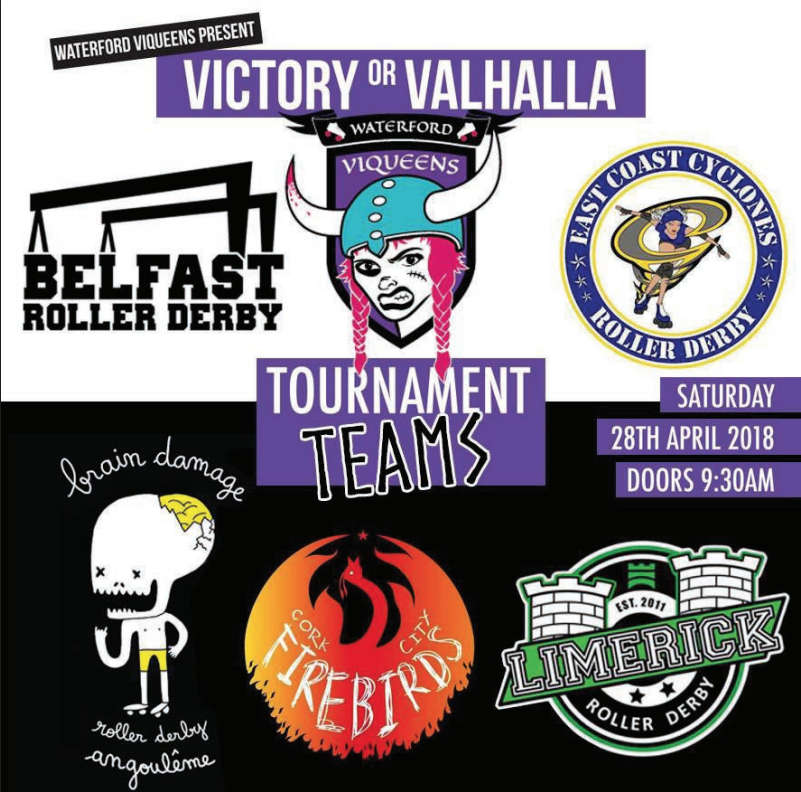
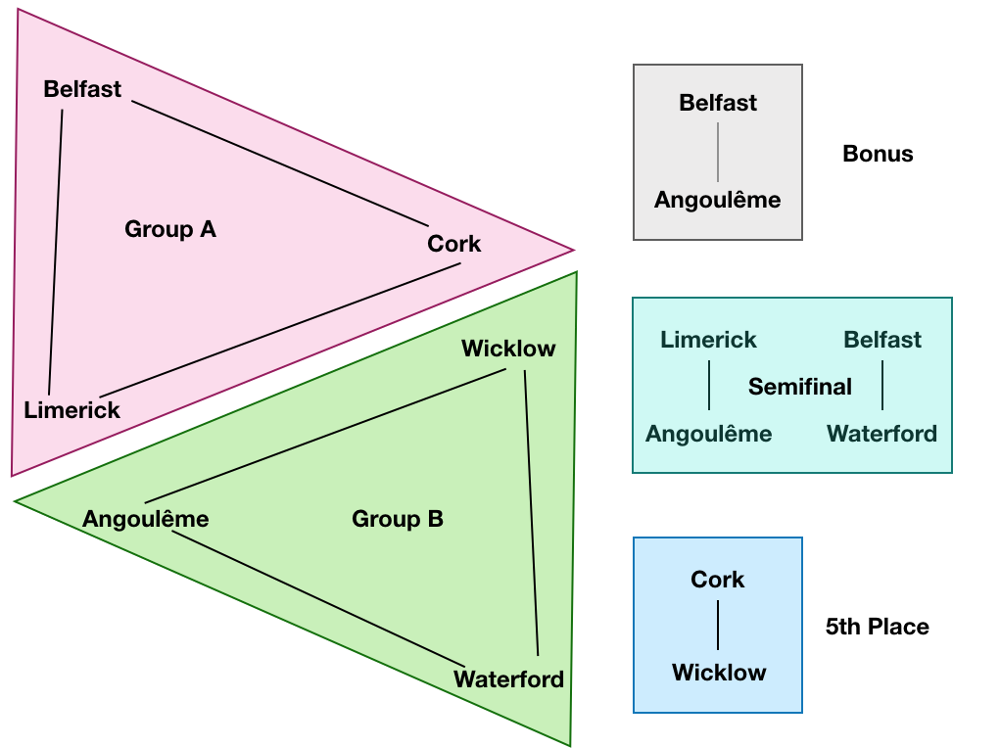
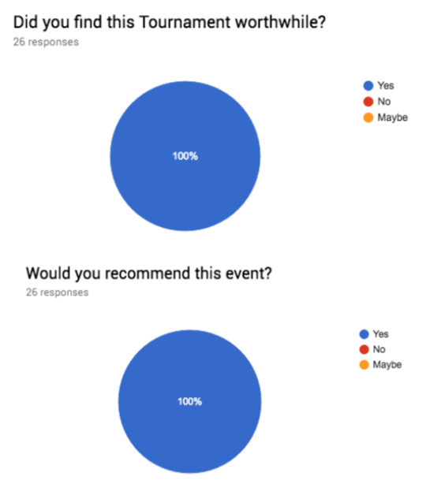
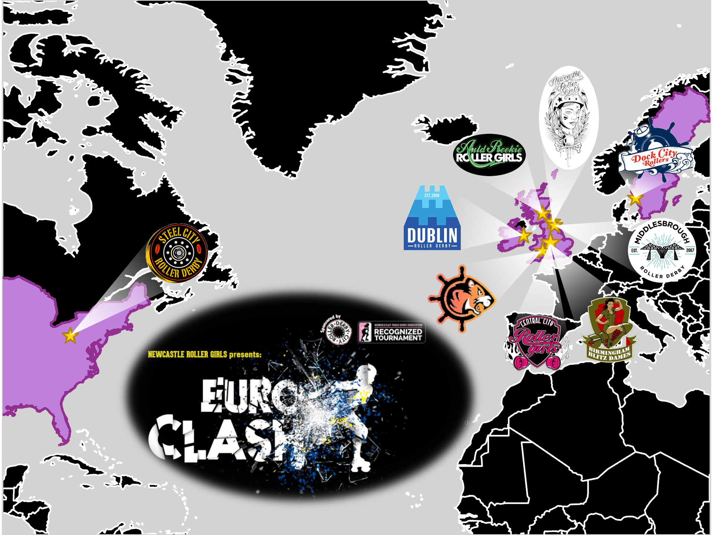
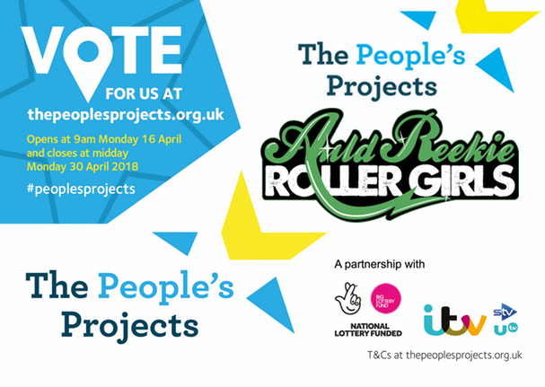
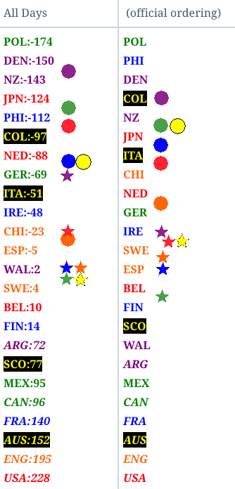

Non-US/Canadian Derby Roundup:26th/27th May Edition
Predictions of bouts are from FTS, if possible, and from our own SRD Rank where FTS cannot make predictions (for example: Latin America, or non-MRDA men’s bouts). (SRDRank also has recent WFTDA rankings, including the 31st June ranking, as well as SRDRank, and allows you to make predictions from them.)
If we’ve missed you from our roundup, please let us know! [Or add yourselves to FTS and/or Derbylisting]
(Note: we're especially likely to be missing items this week, as Facebook's response to the Cambridge Analytica scandal has resulted in them turning off large parts of the services we use to automatically collate events for this article. We don't think we've missed too much, but...)Scotland
There's not much derby up in Scotland this weekend - but Granite City are Down South for British Champs fixtures, and you can play New Town on Sunday:- Fri, Dundee: Dundee Roller Derby host another of their open scrims. This one is WFTDA-gender policy (so women and non-binary, gender-expansive skaters), and of course open to all Referees and NSOs. As a learning scrim, you are encouraged to come with something you want to work on, try out or otherwise improve on. [EVENT]
- Sun, Livingston: New Town Roller Girls host an open subscription scrimmage [EVENT]
- New Town Roller Girls versus The World (scrimmage)
United Kingdom
This weekend, it's a slightly quieter weekend for British Champs, with just 2 fixtures - however, there's plenty more roller derby to make up for it, including British #2 team (Rainy City) taking on France's #1, Nothing Toulouse!- Fri, Ipswich, England: Suffolk Roller Derby host an open, all-gender mixed scrim, open to all mins-passed skaters. [EVENT]
- Fri, London, England: Southern Discomfort Roller Derby host a mixed open-to-all scrimmage, open to all scrim-ready skaters [EVENT]
- Fri, Swindon, England: Wiltshire Roller Derby host their regular mixed open scrims - open to all genders, but with the option of gender-restricted jams for skaters who require them. [EVENT]
- Bedford, England: Bedfordshire Roller Derby host a bootcamp by Jerry Attric (Leeds Roller Derby) on rollerdance techniques - a useful cross-over of techniques with Roller Derby! [EVENT]
- Herne Bay, England: Kent Roller Girls host a double header versus Portsmouth [EVENT]
- Leeds, England: Double Threat Skates host a "pop-up" shop, and skate-fitting service, with free Open Skate [EVENT Flyer?][EVENT]
- London, England: Southern Discomfort Roller Derby hold a recruitment/tryout event [EVENT]
- Oldham, England: Rainy City Roller Derby host the current French National Champions, Nothing Toulouse, for their first non-WFTDA-Sanctioned bout in a while (Toulouse not being WFTDA members). [EVENT]
- Rainy City Roller Derby A versus Roller Derby Toulouse A (Nothing Toulouse) [FTS]
- Oxford, England: Oxford Men's Roller Derby host the British Champs Tier 2 Men [FTS tournament][EVENT]
- Oxford Men's Roller Derby versus Super Smash Brollers (Nottingham M)
- Thugly Ducklings (Lincolnshire M B) versus Pack Animals (Wirral M)
- Plymouth, England: Plymouth City Roller Derby are hosting an open skate, and a "coed" (we think they mean "All-Gender") scrim. [EVENT]
- Sun, Birmingham, England: Central City Roller Derby host a free, open-to-all roller derby taster event for those wanting to learn more about the sport. [EVENT]
- Sun, Loughborough, England: Leicestershire Dolly Rockit Rollers host a double header [EVENT]
- School of Block open signup bout: Jocks versus Nerds
- Leicestershire Dolly Rockit Rollers versus Sheffield Steel Rollergirls [FTS]
- Sun, Mansfield, England: The Super Smash Brollers (Nottingham M) play Barrow Infernos (Barrow-in-Furness M) in an MRDA Sanctioned bout[FTS][EVENT?]
- Sun, Sheffield, England: Hallam Hellcats Roller Derby host the British Championships Tier 3 North [FTS tournament][EVENT]
- Hallam Hellcats versus Bruising Banditas (Halifax)
- Whippin Hinnies (Newcastle B) versus Granite City Northern Fights (Aberdeen)
- Sun, York, England: York Minxters host a fundraising gig and outreach event [EVENT]
- Tues, Sheffield, England: Sheffield Steel Rollergirls host their monthly MegaScrim, WFTDA-gender-policy for skaters. Currently full of subscriptions, but cancellations are possible. [EVENT]
Europe
As usual, there's a huge amount of Roller Derby happening in Europe, especially in France, where there's so many triple headers and more it's hard to see how it all fits! IF you want all your roller derby in one place, Sweden has 8 bouts in two days; and Turku, Finland hosts more Suomi Cup fixtures.- Fri-Sat, Odense, Denmark: O-Town Roller Derby host a two-day experience as part of Odense Cultural Festival. [EVENT]
- Fri: Bout (home teams?)
- Sat:
- Rookie Bout
- "try derby" demonstrations etc
- Bout (home teams?)
- Charleroi, Belgium: Blackland Rockin' K-Rollers host a triple header of roller derby action [EVENT]
- Blackland Terrors (Charleroi Junior) versus Kinderby (Lille Junior) [FTS]
- Randy Devils and friends versus The World (open subs men's game)
- Blackland (Charleroi) versus Rolling Candies (Amiens B) [FTS]
- Namur, Belgium: Namur Roller Derby host a triple header [EVENT]
- Prague, Czech Republic: The Hard Breaking Dolls host a "FreshMeat" scrimmage, for skaters both pre- and post-mins skills [EVENT]
- Turku, Finland: Dirty River Roller Derby host the next fixtures in the Suomi Cup [FTS Tournament][EVENT]
- Dirty River Roller Derby (Turku) versus Kouvola Roller Derby
- Kallio Rolling Rainbow (Helsinki) versus Tampere Roller Derby
- Turku, Finland: Dirty River Roller Derby's afterparty event is also in collaboration with the Oh My Queer! klub venue [EVENT]
- Clermont-Ferraud, France: the Auver'Niaks host a double header of derby against Grenoble's Cannibal Marmots [EVENT]
- Le Crés, France: DCCLM host a triple-header round robin tournament, En Mai Bloque ce qu'il te plait [EVENT]
- Lille, France: As part of the Festival of Skating in Lille, Roller Derby Lille are holding a double header of roller derby [EVENT]
- Baronnes Von Schlass (Roller Derby Lille B) versus The Royal Brigade (Royal Army B / Stockholm) [FTS]
- Switchblades Rollergrrrls (Roller Derby Lille A ) versus Les Fromages Blancs (Lille Roller Girls A/B mix)
- Sat-Sun, Metz, France: Roller Derby Metz Club host a French/German tournament - Metz ist Wunderbar!, a round-robin for 4 teams [FTS Tournament][EVENT]
- La Boucherie de Paris versus RurhPott Roller Girls A
- Harbor Girls A (Hamburg) versus RDMC All Star
- La Boucherie de Paris versus RDMC All Star
- Harbor Girls A / RurhPott Roller Girls A
- La Boucherie de Paris / Harbor Girls A
- RurhPott Roller Girls A / RDMC All Star
- Montpezat-sous-Bauzon, France: Criminal Nurses Aubenas host the second edition of their Goat Save The Pack bootcamp for rookie (mins-passed less than 5 games) skaters [EVENT]
- Paris, France: Les Gueuses de Pigalle host a double header of roller derby [EVENT]
- Paris, France: Lutece Destroyeuses also host derby in Paris - in their case, a triple-header [EVENT]
- Saint-Étienne, France: the Green Harpies host a fundraising bout for the League Against Cancer (La Ligue Contre Le Cancer), plus a Tolpar (knife fighting) demonstration at half time! [EVENT]
- Green Harpies (Saint-Étienne) + Viennes Haineuses (Vienne) versus The World (open subscription)
- Erfurt, Germany: Roller Derby Erfurt host a triple header, with a Bundesliga Div 3 bout [FTS tournament][EVENT]
- Rolling Thunder Augsberg versus Roller Derby Erfurt (all-gender teams)
- Breaking Bears (Berlin C) versus Glitter Queens (Erfurt, Nürnberg, Stuttgart, Köln, Augsburg)
- Gargörlz (Erfurt) versus Rolling Rat Pack (Regensburg) [Bundesliga 3]
- Münich, Germany: Münich Rolling Rebels host a double-header, with a Bundesliga Div 1 bout [FTS tournament][EVENT]
- Münich Dynamite (Münich A) versus Bembel Town Roller Girls (Frankfurt) [Bundesliga 1]
- Vagine Regime Central Europe versus Alpen Allianz (Zürich/Vienna/Münich)
- Reykjavik, Iceland: Roller Derby Iceland host Oslo for a bout [EVENT]
- Ragnarök (Iceland) versus Oslo Tiger City Beasts (Oslo B) [FTS]
- Lecce, Italy: The Seasters of Adriatic Roller Derby League host a double header [EVENT]
- Seasters (Adriatic Coast) versus Worst Warsaw Roller Derby [FTS]
- "Co-ed" (Open To All) mixed bout
- Eindhoven, Netherlands: Rockcity Rollers host an open scrimmage, open to mins passed skaters with "women only" (we assume actually WFTDA-gender-policy, so non-binary + gender expansive too, but we'd advise skaters to query first). [EVENT]
- Bergen, Norway: Wet City Rollers host a fundraising pop-up food and flea market (with the chance to also geto Wet City merch) [EVENT]
- Donostia/San Sebastián, Spain: Easo Avengers host a bootcamp run by Miss Miyagi (GO-GO Gent / Sucker Punch Skate Shop) [EVENT]
- Donostia/San Sebastián, Spain: Easo Avengers will also be hosting a free "try derby" workshop event for those interested in the sport [EVENT]
- Las Palmas de Gran Canaria, Canary Islands, Spain: Las Palmas Roller Derby and Tibicenas Men's Roller Derby co-host a combined training session + OTA scrimmage [EVENT]
- Madrid, Spain: Roller Derby Madrid hosts a double-header for their B team [EVENT]
- Roller Derby Madrid B versus West Team (León, Salamanca, Vigo)
- Roller Derby Madrid B versus Roller Derby Bordeaux [FTS]
- Madrid, Spain: And Black Thunders Madrid are holding an exhibition event combining a chance to learn about roller derby, and recruitment [EVENT]
- Valencia, Spain: Rayo Dockers host their first tournament - Track on Fire - a triple round robin, and a scrimmage to finish[EVENT]
- Sat-Sun, Angered, Sweden: Västsvenska Roller Derby host a two-day octuple header of derby action! [EVENT]
- Saturday:
- Crash Test Brummies (Birmingham M) versus South Wales Silures (Cardiff M) [FTS]
- Killer Wheel Rollers (Västsvenska/Gothenburg) - Västerås Roller Derby (Västerås) [FTS]
- South Wales Silures versus Manneken Beasts (Brussels M) [FTS]
- Gothenburg Salty Seamen (Gothenburg M) versus Crash Test Brummies [FTS]
- Sunday May 27th:
- Saturday:
- Norrköping, Sweden: Norrköping Roller Derby host a "try derby" open afternoon for those interested in finding out about the sport [EVENT]
- Sun, Antwerp, Belgium: One Love Roller Dolls host a double header of roller derby against Amsterdam [EVENT]
- Sun, Brussels, Belgium: Brussels Derby Pixies host an "open skate" and the opportunity to spectate the following training session, as outreach. [EVENT]
- Sun, Chambéry, France: Les Chambér-Hyènes host a triple header of roller derby [EVENT]
- les Chambér'hyènes (Chambéry) versus Rolling Furies (Lausanne) [FTS]
- les Quadstrators (Grenoble M) versus UB (open subscription)
- Open-To-All mixed bout (match mixte N1-N2)
- Sun, Châteauroux, France: Les Pirnanas host a triple header of roller derby [EVENT]
- Sun, La Rochelle, France: Roller Derby La Rochelle host... a triple header of roller derby [EVENT]
- Rookie game: Black versus White
- Sombres Héros (La Rochelle M) versus Gens Bons (Bayonne M) [FTS]
- Cheeky Dolls (La Rochelle) versus Misfeet (Le Mans) [FTS]
- Sun, Marseille, France: Marseille Roller Derby Club host also a triple header of roller derby too, against Lyon's finest [EVENT]
- Sun, Montpezat-sous-Bauzon, France: The Criminal Nurses of Aubenas host a triple header of roller derby to follow their bootcamp the previous day [EVENT Flyer]
- Sun, Paris, France: Lutece Destroyeuses follow up their triple header the day before with a 15 team Sur5al tournament! ("100% female" gender rules :(), FOOD TRACK. [EVENT]
- Sun, Rennes, France: Roller Derby Rennes also host their own triple header of roller derby [EVENT]
- Vagine Regime France versus Les Déferlaines (Rennes mashup) [FTS?]
- "Storm on the Track" variant rules bout - three teams? random rules changes every 2 jams, etc.
- Mortale Condate (Rennes Rookies) versus Roller Derby Caen Rec team
- Sun, Potsdam, Germany: The Prussian Fat Cats's introductory training course begins [EVENT]
- Sun, Donostia/San-Sebastián, Spain: Easo Avengers finish off their weekend of outreach with an open demonstration scrimmage [EVENT]
- Tues, Lahti, Finland: Lahti Roller Derby host an open scrimmage for fresh meat / rookie skaters. No gender policy stated. [EVENT]
Pacific
The Pacific region sees the big Australian series continue, with both the 5x5 and the Open Season having fixtures this weekend..- Sydney, NSW, Australia: South Side Derby Dolls host the next fixtures in the 2018 5x5 Championship [FTS Tournament][EVENT]
- Sydney Roller Derby League Snipers versus Newcastle Roller Derby (Tier A)
- Hawkesbury/Hills Area Roller Derby versus Varsity Derby League Rogue Scholars (Canberra B) (Tier B)
- Inner West Roller Derby (Sydney) versus Blue Mountains Roller Derby (Katoomba) (Tier A)
- South Side Derby Dolls versus Western Sydney Rollers (Tier B)
- Mansfield, QLD, Australia: The third round of the Roller Derby Open Season 2018 series continues, with the following fixtures [FTS tournament][EVENT]
- Punk Blockers (Brisbane City Rollers) versus Zombees (Sun State Roller Girls B [Brisbane]) [division 1]
- Cherry Bombs (Northern Brisbane Rollers) versus Rumble Bees (Sun State Roller Girls A [Sunshine coast]) [division 1]
- Ninja Stars (Coastal Assassins / ) versus Valley Valkyries (Tweed Valley Rollers) [division 2]
- Black Hearts (Northern Brisbane Rollers B) versus Runaways (Northern Brisbane Rollers C) [division 2]
- Banshees (Brisbane City Rollers B) versus Violet Femmes (Brisbane City Rollers C)[division 2]
- Campbelltown, SA, Australia: Murder City Roller Girls host Light City Derby (Adelaide) for a battle of their home teams [EVENT]
- Murder City Roller Girls versus Light City Lady Sabres [FTS?]
- Tahunanui, New Zealand: Nelson Bay's Sirens of Smash host a double header against Northland Nightmares [EVENT]
- Sirens of Smash versus Northland's Night Fury (Whangarei) [FTS?]
- Sirens of Smash versus Northland's Hell's Wives (Whangarei) [FTS?]
- Napier, New Zealand: Bay City Rollers host a double header, including a New Zealand Top 10 bout [FTS Tournament][EVENT]
- Iron Maidens (Bay City Rollers - Napier A) versus Moana Roller Derby (Tauranga) [Top 10]
- Twisted Sisters (Napier B) versus Moana Roller Derby B [FTS]
- Wellington, New Zealand: Richter City Roller Derby host a double header event, including a New Zealand Top 10 series game [FTS Tournament][EVENT]
- Richter City (Wellington) versus Dead End Derby (Christchurch) [Top 10]
- Home teams: Brutal Pageant versus Smash Malice
- Sun, Maylands, WA, Australia: Western Australia Roller Derby (WARD) host their second home teams fixture of the season, as Atomic Sirens take on Sonic Doom! [EVENT]
- Sun, Dunedin, New Zealand: Dunedin Derby hosts a New Zealand Top 10 bout [FTS Tournament][EVENT Flyer]
- Dunedin "Gallow Lasses" versus Sulphur City Steam Rollers (Rotorua)
- Sun, Napier, New Zealand: Bay City Rollers host another open "casual skate sessions" for people interested in finding out more about them, and Roller Derby [EVENT]
Latin America
In Latin America, there's action everywhere, with Argentina and Chile both hosting tournaments!- Fri-Sat, Córdoba, Argentina: Insubordinades Roller Derby Disidente host their first event, a two-day tournament and party [EVENT]
- Fri: Triple-header round-robin
- Sat:
- Survival Crew (Córdoba M) versus The World (subscription)
- Black versus White (open subscription mixed game)
- Roller Dance Party
- Fri, Bogotá, Colombia: Rock N Roller Queens host a Disco Party event [EVENT]
- Córdoba, Argentina: Hiedras Roller Derby host a bootcamp event! [EVENT Flyer]
- Santiago, Chile: Terror S-Quad Roller Derby host the third fixture of the 2018 Torneo X-MEN tournament [FTS Tournament][EVENT] featuring
- Deskarriados RD (Osorno M)
- Colusion Austral RD (Valdivia M)
- Terror S-Quad Roller Derby (Santiago M)
- Chillanrolleros Derby Club (Chillán M)
- Sat-Sun, Guadalajara, Mexico: the Minervas host a a 4-team round robin tournament, the Copa Ahogada 2018 over the weekend [FTS tournament][EVENT]
- Quimeras (Cuidad Mexico area, LRDCM A) vs Juárez
- MCRD All-Stars (Mexico City) vs Minervas (Guadalajara)
- Quimeras vs Minervas
- MCRD All- Stars vs All-Star Juárez
- All-Star Juaréz vs Minervas
- Sun, Necochea, Argentina: Calacas Acidas Roller Derby host a double header event [EVENT]
- "Feminino" (Womens) bout
- "Mixed" (Open to All) bout
- Sun, Sau Paulo, Brazil: The Thunder Rats Derby Squad are raising funds with their second "Open Icecream" stall event! [EVENT]
- Sun, Santiago, Chile: Metropolitan Roller Derby host another edition of Patines y Amigas (Skates and Friends), their open skate sessions (also open to those who want to see what derby is about). This edition, there's also free skate hire if you don't have kit! [EVENT Flyer]
- Sun, Mexico City, Mexico: The All-Blacks are hosting a friendly game of roller derby [EVENT Flyer]
- All Blacks Roller Derby CDMX (Mexico City) versus Medusas Roller Derby (Pachuca) [FTS]
Africa and Middle East
Golden City Rollers are recruiting - although there's no Facebook Event or other entry for this, just a flyer.- Sun, Johannesburg, South Africa: Golden City Rollers host an open recruitment event. [EVENT flyer]
Elsewhere
- Denver, USA: Of interest to us because of the attendance of Perth Roller Derby, Mayday Mayhem, hosted by Denver Roller Derby, sees 9 teams play off in a single-elimination WFTDA-sanctioned division , and 4 MRDA teams play a round-robin. [FTS tournament][EVENT]
- Perth Roller Derby versus Omaha Roller Girls (first fixture for Perth, rest TBD by performance)
- West Palm Beach, Florida: Dub City Roller Derby hosts Buenos Aires, Argentina's Sailor City Rollers for a bout! [FTS][EVENT]
ViQueens' Victorious Valhalla: a test for PivotStar rules.
Tournaments have always been a popular thing in Roller Derby, and as the community both grows and becomes more concerned with cost- and time-efficiency, this is only becoming more true. However, with a standard WFTDA-rules bout needing at least 90 minutes (and preferably 2 hours) blocked in for it, and around 14+ officials if fully-staffed, hosting large numbers of teams can be tricky, especially if you want a tournament structure capable of providing a "winner".
As a result, there's a huge number of alternative rules for shorter game formats, thus allowing more games per day, and more teams per tournament: from the 2 minute games of Sur5al, through 21 minute Derby Sevens [both with reduced rosters too], through various ad-hoc 30, 40 and 45 minute modifications of the rules.
Few of the above bout systems change much about the rules of the game beyond timing (and sometimes roster restrictions) - they all take the same number of officials as WFTDA standard games.
Victory or Valhalla
Waterford City Viqueens, Waterford's oldest Roller Derby league, wanted to promote Roller Derby in their city (and in Ireland) by hosting a 6 team tournament, with teams from across Eire and beyond. For a small league; in this case, just 25 members; hosting a 10 game tournament is challenging not just in terms of time, but also officiating resources. As Macks, for the Viqueens notes, "As Ireland is so small (in general, not just in derby land) securing officials was one of the toughest aspects of organising the tournament, we all know that without them...... THERE IS NO DERBY!"
This was also the Viqueens' first event on this scale, so they also had to work on solving all of the large tournament problems - food, water, changing rooms, scheduling and so on - for the first time.
To cope with these additional pressures, the league decided to make a more radical choice of ruleset: adopting the 2017 PivotStar Rules. To the best of our knowledge, Victory or Valhalla is the first tournament outside of North America where the PivotStar rules have been applied.
PivotStar Rules
The "PivotStar Rules" originated at the 2017 edition of Best of the West, a Canadian tournament. Tournament sponsors and co-organisers, PivotStar, wanted to provide a more competitive format for large-scale contests, whilst also reducing the amount of overhead needed for officials. PivotStar owner, Luludemon, has explained the reasoning behind the design in more detail on her blog here: [LINK].The executive summary of changes [and reasoning] might look something like:
- 20 minute games / no timeouts [reduced time / more games]
- 1 point per pass [reduces load on officials/reduces need for jam referees, reduces "lead jammer advantage"]
- Track cuts relative to track, not opposing players [reduces load on officials, keeps game moving forwards]
The tournament itself, Victory or Valhalla, was organised as 2 group stages (of three teams each, unseeded), into placement bouts - a single 5th place bout for the lowest teams in each group, and a 4 team single elimination for the top 2 in each group. This gave every team a minimum of 3 games, and a maximum of 4 (for the finalists).
Results
An obvious effect of the 1 point per pass rule is that scores are a quarter to a fifth as high as equivalent scores from WFTDA rules games of the same duration, as you can see below (Limerick forfeited the final against Belfast, so a bonus game was played between 3rd place (on points) Angoulême and Belfast):| Belfast Roller Derby | 17 | : | 8 | Cork City Firebirds |
| Brain Damage Angoulême | 11 | : | 9 | Waterford City Viqueens |
| Limerick Roller Derby | 10 | : | 12 | Belfast Roller Derby |
| East Coast Cyclones | 3 | : | 11 | Brain Damage Angoulême |
| Cork City Firebirds | 8 | : | 14 | Limerick Roller Derby |
| Waterford City Viqueens | 22 | : | 4 | East Coast Cyclones |
| Cork City Firebirds | 14 | : | 4 | East Coast Cyclones |
| Brain Damage Angoulême | 9 | : | 16 | Limerick Roller Derby |
| Belfast Roller Derby | 11 | : | 10 | Waterford City Viqueens |
| Brain Damage Angoulême | 8 | : | 18 | Belfast Roller Derby |

Final standing
1st Belfast RD 2nd Limerick RD [forfeit] 3rd Brain Damage Angoulême 4th Waterford Viqueens 5th Cork City Firebirds 6th East Coast Cyclones (Wicklow)(Other than Belfast topping Limerick (due to Limerick forfeiting), this reproduces the FTS European rankings of the teams competing: these results are not in FTS as yet, as they're non-standard ruleset.)
Feedback
Any tournament which runs on time and has no major issues is a successful tournament... but how did the attendees react to the new format for Victory or Valhalla?Waterford City Viqueens performed a survey of attendees to measure just that, and have generously shared a summary of the results with us, on which we base this part of the article.
As with all surveys of a population, there are conflicting opinions, with some people praising aspects which others disliked (for example, the summary highlights responses complaining that 20 minute games were a little short, alongside several responses lauding the short games for allowing so many games to be packed into a single day tournament). On a purely qualitative measure, then, response to the PivotStar format might be considered mixed, as skaters mentioning it were either confused by the rules, or, conversely, found them simpler. (By contrast, officials only positively mentioned the rules being simpler + more predictable, with complaints more towards the reduction in the number of officials on track.)
On a more quantitative measure, though, the feeling is unambiguously positive. Given the chance to rate various aspects of the tournament on a 5 point scale, every single aspect received a mean and median rating between 5 and 4; and no aspect had any 0 ratings at all. Most promisingly, 100% of responding Skaters and Officials both found the tournament "worthwhile" and said that they would recommend it to others. The Viqueens pulled out a particularly positive quote from one (anonymous) respondent: "Seriously this was a fantastic event and should be a yearly thing. Like an Irish roller con: ye should be really proud of yourselves for pulling it off so well!"
 Survey data collated by Waterford Viqueens, made available to us on request.
An interesting aspect emerging from the more detailed questions was the not inconsiderable number of officials interested in the tournament primarily because of the different ruleset. 22% of officials (compared to 11% of skaters) chose this as their reason, when only allowed to pick a single response. (The majority of skaters prized the ability to compete in multiple games as their reason, 73% of skaters saying so; officials were more split, with no really clear majority out of "location", "multiple games" and "rule set".)
For the Viqueens' part, the event was an overall success, both in terms of organisation: "The schedule was reliable and well kept to; we went over time a little before lunch, but the break allowed us to catch up", and in terms of the social effect; "The amount of derby teams was great: people got to meet different teams and play teams they hadn't played before [which] created a great sense of community".
The league, of course, pay tribute to all those necessary for the event to exist, noting that "The announcers were fantastic, [and] the Refs and NSOs did a great job and helped everything run super smoothly".
In fact, media seems to have been the only thing that could be improved, with a Tournament Group Photo one of the things that the league would like to ensure happens next time. (We'd also recommend a group photo for the officials, the announcers, and the volunteers, as well!)
We'd love to see more tests of the PivotStar Rules elsewhere (with the permission of PivotStar, of course - although we know Luludemon is personally excited to see people using the ruleset in general, it's always nice to ask); and we look forward to more tournaments from Waterford Viqueens in future!
Mid-weekend Tournament Update Special
With all the excitement at EuroClash, and some other interesting fixtures today, we're giving you a quick roundup of all the action that's happened so far....
Day 1 of EuroClash saw the following games played in Newcastle, England - * indicates an upset in terms of the lower-seeded team winning, ! indicates an exceptional performance, although the predicted team won:
| TEAM 1 | TEAM 2 | RATIO | WFTDA Pred(relative strength) | SRDRank Pred |
| Tiger Bay Brawlers: 370 | 55: Steel City Roller Derby | 6.73 (!) | 1.03 | 1.79 |
| Newcastle Roller Girls: 149 | 168: Birmingham Blitz Dames | 0.89 | 0.71 | 0.77 |
| Dublin Roller Derby: 199 | 222: Dock City Rollers | 0.90 (*) | 2.02 | 1.40 |
| Birmingham Blitz Dames: 177 | 106: Steel City Roller Derby | 1.70 | 2.08 | 1.69 |
| Newcastle Roller Girls: 115 | 161: Tiger Bay Brawlers | 0.71 | 1.45 | 0.73 |
The most striking deviation from prediction was the massive victory of Cardiff's Tiger Bay Brawlers over the US's Steel City Roller Derby in the first game of the tournament - smashing all predictions. Notably, both teams performed closer to expectations on their other games during the day.
The other upset of the day was an actual upset - and one of the more likely ones in the event, as Dock City Roller Derby narrowly toppled tournament favorites Dublin - breaking a long winning streak for the latter team, in the second period, after trailing by 40 points at the end of the first.
You can catch up with the equally exciting second day of EuroClash - including all of Auld Reekie Roller Girls, Central City Roller Derby and Middlesbrough Roller Derby's games - with the livestream, which will be linked from the EuroClash page, and WFTDA.tv.
Over in Spain, Brawlcelona sees Barcelona Roller Derby hosting Madrid, Münich and Prague for games, three of which happened today (we'll update the final score when we manage to acquire it):
| TEAM 1 | TEAM 2 | RATIO | SRDRank Pred |
| Prague City Roller Derby:45 | 401:Roller Derby Madrid | 0.11 | 0.30 |
| Barcelona Roller Derby: 110 | 153: Roller Derby Madrid | 0.72 | 0.80 |
| Prague City Roller Derby: 39 | 319: Münich Dynamite | 0.12 | 0.45 |
Note that Prague City are playing in this tournament with only a roster of 8, and played part of their second game, against Münich, with only 5! Considering this, their achieved scores are impressive indeed.
Sadly, there's no live stream for the Brawlcelona tournament as it continues tomorrow.
Finally, some updates from the Scottish Roller Derby fixtures:
Over in Glasgow, Glasgow Roller Derby hosted Dundee Roller Derby for a double-header, between both A and both B teams. The A team matchup has been something of a long-awaited contest.
SRDRank predicted a near draw for the B teams, and a 5:4 score ratio in Dundee's favour. As it happens, Dundee blew away expectations in both games, with a convincing victory away, especially for the travel team.
Maiden Grrders (Glasgow B) 170 : 207 Bonnie Colliders (Dundee B)
Irn Bruisers (Glasgow A) 144 : 373 Silvery Tayzers (Dundee A)
Down in London, ignoring any other international events happening in the area, Glasgow Men's Roller Derby played a pair of closed bouts against London's Southern Discomfort. SRDRank predicted a 10:1 victory for SoDisco A, and a 4:7 victory for SoDisco B, and the performance on the day met expectations.
Glasgow Men's Roller Derby 150 : 215 Mild Discomfort (Southern Discomfort B)Glasgow Men's Roller Derby 46 : 504 Knights of Discomfort (Southern Discomfort A)
Non-US/Canadian Derby Roundup:19th/20th May Edition
Predictions of bouts are from FTS, if possible, and from our own SRD Rank where FTS cannot make predictions (for example: Latin America, or non-MRDA men’s bouts). (SRDRank also has recent WFTDA rankings, including the 31st June ranking, as well as SRDRank, and allows you to make predictions from them.)
If we’ve missed you from our roundup, please let us know! [Or add yourselves to FTS and/or Derbylisting]
(Note: we're especially likely to be missing items this week, as Facebook's response to the Cambridge Analytica scandal has resulted in them turning off large parts of the services we use to automatically collate events for this article. We don't think we've missed too much, but...)Scotland
There's only the one double header in Scotland this weekend (but Auld Reekie are down south at EuroClash), as Glasgow face Dundee:- Glasgow: Glasgow Roller Derby host their second double header in two weeks, as they invite Dundee Roller Derby over for A and B team games [EVENT]
- Wed (23rd), Dumfries: Doonhame Roller Derby host their next open day (no Facebook event) [EVENT flyer]
United Kingdom
This weekend, British Champs is across the whole weekend, with two fixtures on Sat and two on Sunday. We expect a lot of people will be over in Newcastle, however, for the second ever EuroClash tournament!- Wed, Sheffield, England: Hallam Hellcats host an open scrim, slightly confusingly worded but open to WFTDA-gender-policy conforming skaters. [EVENT]
- Thursday, ?: Possible closed bout between Leeds Roller Derby and Tiger Bay Brawlers (presumably taking advantage of TBB being up for EuroClash on the weekend) [FTS]
- Ipswich, England: Suffolk Roller Derby host the British Championships Tier 3 Mens [FTS Tournament][EVENT]
- Kent Men's Roller Derby versus East Anglo Smacksons (Norfolk M)
- Suffolk Roller Derby (Men) versus Dorset Knobs
- Kingston upon Hull, England: Hulls Angels Roller Derby host the British Championships Tier 3 East [FTS tournament][EVENT]
- Nottingham Roller Derby versus Lincolnshire Bombers
- Hull's Angels Roller Derby versus Roller Derby Leicester
- London, England: London Rockin' Rollers host a rookies / C-level scrim [EVENT]
- London Rockin Rollers "rookies" versus Mixed Rookies Team
- ??London??, England: Flat Track Stats lists a pair of (closed) bouts between Southern Discomfort and Glasgow Men's Roller Derby:
- Sat-Sun, Newcastle, England: Newcastle Roller Girls host their second ever EuroClash tournament, which you should already know all about from our previous coverage [HERE, and HERE]. [FTS Tournament][EVENT]
- Tiger Bay Brawlers (Cardiff) versus Steel City Roller Derby (Pittsburgh)
- Newcastle Roller Girls versus Birmingham Blitz Dames
- Dublin Roller Derby versus Dock City Rollers (Gothenburg)
- Birmingham Blitz Dames versus Steel City Roller Derby
- Newcastle Roller Girls versus Tiger Bay Brawlers
- Newcastle Roller Girls versus Steel City Roller Derby
- Dublin Roller Derby versus Middlesbrough Roller Derby
- Dock City Rollers versus Auld Reekie Roller Girls
- Central City Roller Derby [Birmingham] versus Steel City Roller Derby
- Middlesbrough Roller Derby versus Auld Reekie Roller Girls
- Dock City Rollers versus Birmingham Blitz Dames
- Winchester, England: SC*R's monthly charity scrims return, this time with a Friends theme, as the Phoebe Buff'ay?s take on the Chandler Bangs [EVENT]
- Sunday, Bideford, England: North Devon Roller Derby host the British Championships Tier 2 South [FTS tournament][EVENT]
- North Devon Roller Derby versus South West Angels of Terror (Exeter/Taunton)
- Bath Roller Derby Spartans versus Royal Windsor Roller Girls
- Sunday, Grimsby, England: The Grim Reavers and Brothers Grim host a double header [EVENT]
- Brothers Grim (Grimsby M) versus Knights of Oldham (Oldham M) [FTS]
- Grim Reavers (Grimsby A) versus ?? [FTS?]
- Sunday, Harrogate, England; Spa Town Roller Derby host the British Championships Tier 4 West [FTS tournament][EVENT]
- Spa Town Roller Derby versus Furness Firecrackers (Barrow-in-Furness)
- Durham Rolling Angels versus Durham Roller Derby
- Sunday, ??London??, England: Flat Track Stats lists two apparently closed bouts in London: We suspect these aren't hosted together, but since they're both closed, we're grouping them here:
- Tuesday [22nd], Leeds, England: Leeds Roller Derby host their next tryouts for the team [EVENT]
Europe
As usual, there's a huge amount of Roller Derby happening in Europe, especially in France (as the Division 2 of the French Championnat has its finale), Sweden and Spain (as Barcelona hosts their European tournament, Brawlcelona!).- Friday, Dresden, Germany: Roller Derby Dresden host a very special edition of their Dresden Derby Days bootcamps - an Announcer bootcamp. Run by the very experienced Val Kyria. [EVENT]
- Friday, Erfurt, Germany: Roller Derby Erfurt are running a fundraiser music event with music from the Death Punk band Skeleton Dance Club, and the Post Grunge band The Dead End Kids [EVENT]
- Bordeaux, France: Roller Derby Bordeaux Club host a single header for their B team [EVENT]
- Compagnie Cruelle (Bordeaux B) versus Brain Damage (Angoulême) [FTS]
- Castres, France: Castres Roller Derby host a 6 team tournament (with reduced length duration games - 2x20 minute periods) [EVENT] featuring:
- Rainbow Furies (Toulouse C?)
- Les Amazones (Pays d'Aix)
- Mars Invaders (Marseille)
- Gones'n'Roses (Lyon B)
- Euskal Roller Derby
- Castres Roller Derby
- Sat-Mon, Dijon, France: Another division of the French national series plays its finals, as The Velvet Owls host the last games of the Division 2 [FTS tournament][EVENT]
- Panthers Miaou (Roller Derby Panthers B, Saint-Gratien)
- B.M.O Roller Derby Girls (Brest)
- Glorious Bâtardes (Lille B)
- The Velvet Owls (Dijon)
- Bones Breakers (Nîmes)
- Faux Soyeuses (Lyon)
- Les Biches (Léman)
- Divines Machines (Nantes B)
- Dresden, Germany: The Dresden Derby Days bootcamps continue into the weekend, with both
- a fresh meat / rookies + beginners bootcamp, coached by a host of Dresden and Team Germany coaches + skaters [EVENT]
- an NSO bootcamp and WFTDA-recognised Clinic, coached by the extremely experienced Kirahvi (Malmö + Copenhagen) [EVENT]
- all bootcamps culminate in a mixed scrimmage where Announcers, NSOs and skaters can all demonstrate what they've learned [EVENT]
- Arnhem, Netherlands: Arnhem Fallen Angels host a double header of Dutch roller derby [EVENT]
- Suck City Roller Derby (Breda) versus Rotterdam Killer Bees (Rotterdam B) [FTS]
- Arnhem Fallen Angels versus "Mixed team"
- A Coruña, Spain: Irmandiñas Roller Derby host an open friendly scrimmage against all comers [EVENT]
- Irmandiñas Roller Derby (Coruña) versus The world
- Sat-Sun, Barcelona, Spain: Barcelona Roller Derby hosts the third edition of their two-day European tournament, Brawlcelona! [FTS Tournament][EVENT]
- Prague City Rollers Derby versus Roller Derby Madrid
- Prague City Roller Derby versus Münich Dynamite (Münich A)
- Ingles de Acero All-Stars (Barcelona) versus Roller Derby Madrid
- Ingles de Acero All-Stars versus Prague City Roller Derby
- Roller Derby Madrid versus Münich Dynamite
- Ingles de Acero All-Stars versus Münich Dynamite
- Madrid, Spain: Black Thunders Madrid host a "trash market", of cheap and bargain items, to fund their attendance at tournaments [EVENT]
- Valencia, Spain: Roller Derby Valencia end their season with a party, featuring DJs, tattooists, pizza and more! [EVENT]
- 'Sat-Sun, Luleå, Sweden: Luleå Roller Derby host a triple-header round robin over the weekend, with an additional exhibition bout:[EVENT]
- Malmö, Sweden: Crime City Rollers host a double header of roller derby [EVENT]
- Norrköping, Sweden: Norrköping Roller Derby host a triple header of roller derby, including juniors! [EVENT]
- Norrköping B versus Dock City Rollers B (Gothenburg) [FTS]
- Norrköping Juniors versus Stockholm Roller Derby Juniors
- Norrköping C versus "STHLM United" (exhib mashup team)
- Sunday, Joensuu, Finland: Joensuu Roller Derby are hosting an event as part of North Karelia Pride. (Our Finnish isn't good enough, but we think it's an exhibition/display bout?) [EVENT]
- Sunday, Rovaniemi, Finland: Rovaniemi Roller Derby host another of their "try roller derby" open days, ahead of their main recruitment in August [EVENT]
- Sunday, Nantes, France: Les Jules Vénères host a triple-header round robin of men's derby [EVENT]
- Sunday, Rimini, Italy: the Stray Beez are a large part of a "roller sports" exhibition event in Rimini, where you can see Roller Derby demonstration bouts, and try it out [EVENT]
- Sunday, Gothenburg, Sweden: Gothenburg Roller Derby host a "try it" event, for anyone interested in trying out the sport. [EVENT]
Pacific
The Pacific region sees a bunch of multi-game events (including juniors) across Australia, with only a little action in New Zealand.- Friday, Okinawa, Japan: If the Devil Dog Derby Dames get 3000 likes on their Facebook page, they'll be sending off Iron Maiden with a pie to her face... [EVENT]
- Wollongong, NSW, Australia: Wollongong Illawarra Roller Derby league host the first round of the Eastern Region Super League (South and Central Division)! [FTS tournament][EVENT]
- Hawkesbury/Hills Area Roller Derby versus Central West Roller Derby (Bathurst)
- Wollongong Illawarra Roller Derby versus Western Sydney Rollers
- Osbourne, SA, Australia: Light City Derby host a double header of intraleague games [EVENT]
- Rockabellas Roller Derby League intraleague: Prim Reapers versus Doomsday Rollers [EVENT]
- Light City Derby intraleague: Medic Mayhem versus Galactic Guardians
- Ferntree Gully, VIC, Australia: East Vic Roller Derby host a double header of Junior Derby [EVENT]
- South East Magic Rollers (East Vic Jrs Level 1) versus VRDL Small Stars (Victorian Jnrs)
- South East Magic Rollers (East Vic Jrs Level 2) versus Pot Luck exhib team
- Port Denison, WA, Australia: Sin City Rollers host some roller derby [EVENT]
- Sin City Rollers (Geraldton) versus Margaret River Roller Derby [FTS]
- Wellington, New Zealand: Richter City Roller Derby host a double header [EVENT]
- Sunday, Keysborough, VIC, Australia: Kingston City Rollers host an open mixed scrimmage day, with three levels [EVENT]
- non-contact scrimmage
- "prebouting" scrimmage
- Bout-level scrimmage
Latin America
In Latin America, it's mostly bootcamps and recruitments... although we're excited to see more bouts in Uruguay from the Painted Birds!- Wed/Thurs, Mexico City, Mexico: Quimeras Roller Derby (of Liga Roller Derby Cuidad de México) host a bootcamp coached bySatan's Little Helper (Angel City, Team USA) [EVENT Flyer]
- Friday, Cordoba, Argentina: Hiedras host Insubordinades Disidente for a friendly bout! [EVENT Flyer]
- Friday, Bucaramanga, Colombia : Pink Sucks Roller Derby are participating at a skateboarding + skating event with demonstration of the sport [EVENT Flyer]
- São Paulo, Brazil: Gray City Rebels host an open scrimmage for all mins-passed skaters [EVENT]
- Osorno, Chile: Deskarriadas Roller Derby host their 4th birthday event with a quadruple header! [EVENT]
- Santiago, Chile: Terror S-Quad host a fundraising party to help fund the Torneo X-Men [EVENT]
- Queretaro, Mexico: Nebulosas Roller Derby Queretaro host a punk music fundraiser (to raise funds to attend the 2018 Mexican national tournament) [EVENT]
- Sunday, São Vicente, Brazil: Thunder Rats Derby Squad are recruiting, for any skaters interested in the São Paulo region of Brazil [EVENT]
- Monday, Osorno, Chile: Deskarriadas complete their birthday weekend with an officiating clinic run by El Huracán (Sol Díaz Bravo) from Buenos Aires [EVENT]
- Sunday, Queretaro, Mexico: After their fundraiser, Nebulosas host a bout, against the Delicious Wheels of Celaya [EVENT]
- Nebulosas (Queretaro) versus Delicious Wheels (Celaya) [FTS]
- Sunday, Queretaro, Mexico: Queretaro Roller Derby host a triple header [EVENT]
- Ravens (Queretaro) versus Tekillerass (Cuidad de Mexico A) [FTS]
- Ravens (Queretaro) versus Aniquiladoras (Cuidad de Mexico B) [FTS]
- Crows (Queretaro M) versus Minotauros (Cuidad de Mexico M) [FTS]
Africa and Middle East
We're not aware of anything in the MENA region this week.Elsewhere
- Los Angeles, USA: Angel City Roller Derby host the MayDay Brawl-B-Q "roller derby weekend", a tournament of interest to us because of the attendance of Baja Roller Derby from Ensenada, Mexico [FTS tournament][EVENT]
- Baja Roller Derby versus Misery Loves Company (San Jose)
- Baja Roller Derby versus Angel City Derby Shore Shots (Los Angeles A)
EuroClash 2018: Two Weeks To Go (Schedule + Updated Predictions)
We've written once already about the return of the, now International, Roller Derby tournament to Newcastle Upon Tyne...

...but, with the publication of the official Schedule, and a lot of activity from many of the competing teams, we thought it was worth a quick update.
Firstly, to the schedule: the official schedule in UK time is below, but we've also prepared a fancy multi-time-zone version HERE for anyone expecting a livestream and wanting to follow their favourite team from abroad.
Saturday 19 May
9am Tiger Bay Brawlers vs Steel City Roller Derby 11am Newcastle Roller Girls vs Birmingham Blitz Dames 1pm Dublin Roller Derby vs Dock City Rollers 3pm Birmingham Blitz Dames vs Steel City Roller Derby 5pm Newcastle Roller Girls vs Tiger Bay BrawlersSunday 20 May
9am Newcastle Roller Girls vs Steel City Roller Derby 11am Dublin Roller Derby vs Middlesbrough Roller Derby 1pm Dock City Roller Derby vs Auld Reekie Roller Girls 3pm Central City Roller Derby vs Steel City Roller Derby 5pm Middlesbrough Roller Derby vs Auld Reekie Roller Girls 7pm Dock City Roller Derby vs Birmingham Blitz DamesAlso, since our first update, several of the teams competing have played at significant tournaments: Birmingham Blitz Dames playing exceptional derby at the K-Town Shakedown in Kalamazoo, Michigan, winning 2 out of 3 games, and only losing the last, against Royal City (Guelph) by 9 points (against a predicted loss of around 150!). We predicted that Birmingham might well be underranked in our last update, and this proves us very right... Similarly, a great performance by Dublin at Southern Discomfort 2018 in South Carolina, beating expectations in every single bout by huge margins - only losing one bout (against Ann Arbor) by 3 points (against a predicted loss of around 90), and winning every single other - has pushed their expected rating up significantly, although as they already top the expected teams at EuroClash, this doesn't really change our prediction for them.
Meanwhile, for Dock City Rollers and Newcastle Roller Girls over in Tri-City's Put Up Your Toques in Ontario, it was also a very good weekend. Dock City beat expectations against Winnipeg, and Newcastle both won, and beat expectations, against each of their opponents, giving both of them a substantial boost - but not enough for Dock City to gain on Dublin at the top of the table.
Steel City played a single game since our last update, against the Chicago Outfit, where they also out-performed expectations, by a good 50 points or so.
By comparison, Middlesbrough and Central City have had a relatively quiet time of it, with no further bouts since our last writeup. Central City will play one game, this weekend, as they take on London Rockin' Rollers up in Glasgow for British Champs Tier 1, where their current rating expects a 3:1 score ratio in victory! Nevertheless, games dropping out of consideration, and teams moving around them, have caused ranking changes in WFTDA for both teams.
Unfortunately, Auld Reekie's position is not affected by their own games played since our last update - their closed bouts away against Kallio and Bear City are not marked as Sanctioned on FTS, and so don't count towards their WFTDA ratings there. Whilst they lost a bit of rating compared to last time, their predicted performance seems to have now stabilised, so a rating including these games should be more accurate. Similarly, Tiger Bay Brawlers' bout against Rainy City B can't count towards WFTDA ratings, as only A teams can contribute ratings. The Cardiff team significantly improved on expectations - narrowly defeating a team which "should have" easily defeated them with a 100 pt margin - so it's unfortunate that this bout is not included.
Luckily, we have our own rating system - SRDRank - which draws from the full set of FTS bout records, ignoring WFTDA Sanctioning, to produce a rating which takes into account every single game played by a team, including B teams. We've not had time to update the full rating page for this, but just for EuroClash, we've run a special iteration of the rating just for the tournament, and added a column for it here. (Green rows are teams which have gone up in the expected "finishing order" for EuroClash, according to FTS, and Red rows are those which have dropped. We mark ranking changes in FTS and WFTDA with + and - signs in the Ranking row.)
| FTS "WFTDA" Ratings 09 May 2018 (WFTDA Rating 30 April) | |||
| Rank (Official WFTDA) | Name | Rating (Official WFTDA) | SRDRank (09 May) |
| 34 ++ (38 ++) | Dublin Roller Derby | 800.4 (443.76) | 3.50 |
| 48 ++ (66 -) | Dock City Rollers | 757.3 (311.87) | 3.16 |
| 62 + (71 -) | Middlesbrough Roller Derby | 729.4 (307.57) | 3.26 |
| 65 + (50 +++) | Birmingham Blitz Dames | 724.5 (373.88) | 3.06 |
| 67 ++ (64 -) | Newcastle Roller Girls | 717.7 (315.71) | 2.80 |
| 68 + (81 ++) | Central City Roller Derby | 713.3 (278.36) | 2.99 |
| 82 + (92 -) | Steel City Roller Derby | 692.5 (259) | 2.53 |
| 93 (90 -) | Tiger Bay Brawlers | 676.0 (262.62) | 3.11 |
| 94 (82 +) | Auld Reekie Roller Girls | 674.9 (277.65) | 2.97 |
We won't get either of those games at EuroClash 2018, though, as almost all of the scheduled bouts are against teams which are closely matched in one or other of the ratings. All of our rating schemes expect Dublin's games to be closely fought - Middlesbrough and Dock City are in 2nd to 4th place in all of the rating schemes we have here, and both have a chance at unseating the expected tournament top dogs from Ireland.
Auld Reekie have some difficult games - if you believe FTS, all of their games will be very difficult - but SRDRank has a lot more faith in them. Expect the Edinburgh based team to beat expectations against very tough opponents in Dock City and Birmingham, if we're right.
The ascendant Birmingham will be counting on the WFTDA rating being accurate when they take on Dock City - both other ratings place them slightly below, not above, the Swedish team - but everyone agrees that they should have an easier time against the Americans from Steel City.
Steel City will be wanting to bring upsets to both their games - again, going by their ratings from a little more than a year ago, they should win both of their bouts, against Birmingham and Central City... and their current rating has been steadily climbing in recent months. EuroClash could be the place where an American team does to Europe what European teams traditionally do in the Americas!
Day Tickets (and Weekend Tickets) for EuroClash are available here: https://www.euro-clash.com/tickets
EuroClash 2018 will be held at the Walker Activity Dome, 19th to 20th May 2018, by Newcastle Roller Girls.
Non-US/Canadian Derby Roundup:12th/13th May Edition
Predictions of bouts are from FTS, if possible, and from our own SRD Rank where FTS cannot make predictions (for example: Latin America, or non-MRDA men’s bouts). (SRDRank also has recent WFTDA rankings, including the 31st June ranking, as well as SRDRank, and allows you to make predictions from them.)
If we’ve missed you from our roundup, please let us know! [Or add yourselves to FTS and/or Derbylisting]
(Note: we're especially likely to be missing items this week, as Facebook's response to the Cambridge Analytica scandal has resulted in them turning off large parts of the services we use to automatically collate events for this article. We don't think we've missed too much, but...)Scotland
There's only one fixture we know about in Scotland this weekend:- Friday, Aberdeen: Granite City Brawlers' series of "Open Nights" for those interested in Roller Derby start up. Open to all [EVENT]
- Glasgow: Glasgow Roller Derby hosts the British Champs Tier 1! [FTS Tournament][EVENT]
- Irn Bruisers (Glasgow A) versus Liverpool Roller Birds
- London Rockin' Rollers versus Central City Roller Derby
United Kingdom
This weekend, most of the British Champs fixtures - and thus most of the derby - is on a Sunday.- Oldham, England: Rainy City Roller Derby host another double header - featuring the debut of their D team! [EVENT]
- Sunday, High Wycombe, England: Big Bucks High Rollers host a Free Roller Derby Taster Session [EVENT]
- Sunday, Hull, England: Deathrow Hull host the British Champs Tier 4 East [FTS Tournament][EVENT]
- Suffolk Roller Derby versus Vendetta Vixens (Northampton)
- Deathrow Hull versus York Minxters
- Sunday, Norwich, England: Norfolk Roller Derby host the British Champs Tier 2 North [FTS Tournament][EVENT]
- Wirral Roller Derby versus Auld Reekie All-Star Reserves (Edinburgh B)
- Norfolk Brawds (Norwich A) versus Rebellion Roller Derby (Milton Keynes)
- Sunday, Oldham, England: Rainy City Roller Derby hosts the next of Missy Rascal's Artistic Skating Workshops - great cross-skills training for roller derby [EVENT]
- Sunday, Oxford, England: Oxford Wheels of Gory host the British Champs Tier 4 South [FTS Tournament][EVENT]
- Bourne Bombshells (Eastbourne A) versus Concrete Cows (Milton Keynes A)
- Oxford Wheels of Gory versus Bridgend Roller Derby
- Sunday, Penarth, Wales: South Wales Silures host their regular open scrimmages. Open to all genders, mins-passed. [EVENT]
- Monday, Coventry, England: Coventry Roller Derby host their monthly, open to all genders scrimmage! [EVENT]
Europe
As usual, there's a huge amount of Roller Derby happening in Europe - the Toulouse-hosted Men's Champs for the Championnat de France, GO-GO Gent's Star Track roller derby tournament starting off the Belgian tournament series, the continuing Swedish national tournament... and Helsinki inviting all of London over for a game..- Wed, Karlsruhe, Germany: Roller Derby Karlsruhe host an open scrimmage night[EVENT]
- Thurs, Rovaniemi, Finland: Rovaniemi Roller Derby host the first in a series of open days to show off Roller Derby to the interested, before their August training schedule begins. [EVENT]
- Fri, Gent, Belgium: GO-GO Gent Roller Derby hosts the "sequel" to SKOD - Star Track, a combined tournament, bootcamp and general roller derby event, starting with a Referee Bootcamp on Friday [EVENT]
- Fri, Toulouse, France: Roller Derby Toulouse host the Championnat de France's men's derby finals. [FTS Tournament][EVENT].
Competing:
- Kamiquadz (Montpellier)
- Panam Squad (Paris)
- Bandits Machos (Mâcon)
- Zombeers (Calais)
- Track'ass (Tours)
- Wolfgang (Orcet)
- Calebrutes (Paris)
- Quad Guards (Toulouse)
- Fri, Lecce, Italy: Le Stryx, Roller Derby Salento are hosting a fundraising evening in collaboration with SBAM!, Social Brewery Alta Murgia, a brewery run as a social project supporting and employing those with mental disabilities. le Stryx's part of the funds will go towards funding SalenTrack 2018 [EVENT]
- Innsbruck, Austria: Roller Derby Innsbruck host a single header against Frankfurt [EVENT]
- Fearless Bruisers (Innsbruck A) versus Roller GRRL Gang (Frankfurt A) [FTS]
- Vienna, Austria: Vienna Roller Derby host a double header of derby [EVENT]
- Sat-Sun, Gent, Belgium: GO-GO Gent Roller Derby host Star Track proper, a 2 day tournament including the inaugural Roller Derby Belgium series games (marked RD.be)!. [FTS Tournament][EVENT]
- Who Dares Windsor (Windsor A) versus Namur Roller Girls A (WFTDA)
- Namur Roller Girls A versus GO-GO Gent Roller Derby (WFTDA + RD.be)
- Who Dares Windsor versus The Royal Army (Stockholm) (WFTDA)
- GO-GO Gent Roller Derby versus The Royal Army (WFTDA)
"Men’s roller derby game" (Cancelled due to last minute changes)- One Love Roller Dolls (Antwerp) versus Brussels Derby Pixies (RD.be)
Pack of Destruction (Antwerp B) versus Holy Wheels Bad Ass (Liège B) (RD.be Div 2) (Cancelled due to last minute changes)- Namur Roller Girls A versus The Royal Army (WFTDA)
- GO-GO Gent Roller Derby versus Who Dares Windsor (WFTDA)
- Helsinki, Finland: Helsinki Roller Derby host a triple header against London: [EVENT]
- Lorient, France: Roller Derby Lorient and Hero'S QuaD Roller Derby co-host a double header [EVENT]
- Hero'S Quad (Lorient M) versus UB (open signup)
- Morues (Lorient A) versus UB (open signup)
- Sat/Sun, Lyon, France: Lyon Roller Derby host a bootcamp for Skaters and Officials
- Mannheim, Germany: the Delta Quads host a Bundesliga Division 2 bout [FTS tournament][EVENT]
- Delta Quads (Mannheim A) versus RocKArollers (Karlsruhe)
- Dublin, Ireland: Men Behaving Derby host their recruitment day. Open to all skaters, of all abilities. [EVENT]
- Galway, Ireland: Galway City Roller Derby host a (combined) 454km skate to support the Irish campaign to support the legalisation of abortion. (454km is the distance from Galway to the nearest legal source of abortion services, Manchester) [EVENT]
- Bergamo, Italy: The Crimson Vipers host an interEuropean bout! [EVENT]
- Crimson Vipers (Bergamo) versus East Coast Cyclones (Wicklow) [FTS]
- Urecht, Netherlands: Dom City Roller Derby hosts a double header [EVENT]
- Madrid, Spain: Black Thunders Madrid host an intraleague scrimmage + afterparty [EVENT]
- Perras de Infierno ("Hell Bitches") versus Reinas del Glam ("Glam Queens")
- Västerås, Sweden: Västerås Roller Derby host the next fixtures in the Swedish Seriespel Division 1 [FTS Tournament][EVENT]
- BSTRD (Stockholm B) versus Jackdaw City Rollers (Uppsala)
- Västerås Roller Derby versus Nerike Knockouts (Örebro)
- Sun, Besançon, France: the Voodoo Vixens host a double header of derby [EVENT]
- Voodoo Vixens B versus Les Folles Gèrent (Bienne) [debut bout for Bienne] [FTS?]
- Voodoo Vixens A versus La Meute (Metz B) [FTS]
- Sun, Le Havre, France: Le Havre Roller Derby host a triple header event! [EVENT]
- Sun, Paris, France: Paris Rollergirls, as part of the Aérosol Sunday sessions (link) host their weekly Try Derby sessions [EVENT]
- Sun, Saintes, France: the Holy Terrors host a single header [EVENT]
- Holy Terrors (Saintes A) versus Patronnes (Cholet A) [FTS]
- Sun, Strasbourg, France: Hell's Ass Derby Girls host a double header event [EVENT]
- B'East (Strasbourg B) versus Molly Hatchets (Pontarlier) [FTS]
- Les Menneles (Strasbourg M) versus UB (exhibition)
- Sun, Dublin, Ireland: Dublin Roller Derby's fresh meat recruitment course starts, with all genders welcome [EVENT]
- Sun, Limerick, Ireland: Limerick Roller Derby are hosting one of their regular open days for potential recruits [EVENT]
- Sun, Waterford, Ireland: Waterford City ViQueens have another of their weekly Roller Derby For Beginners tryout sessions [EVENT]
- Sun, Lisbon, Portugal: Lisboa Roller Derby League host a bout [EVENT]
- Lisbon Grrls Roller Derby (Lisbon B) versus Liberty Dolls (Almada B) [FTS]
Pacific
The Pacific region sees the return of the Statewide Stampede in Victoria, plus Shanghai Roller Derby hosting their second ever bout + bootcamp!- Thurs, Tweed Heads, NSW, Australia: Tweed Valley Rollers host their new skater intake [EVENT]
- Friday, Runaway Bay, QLD, Australia: East Coast Derby Dolls host an Open To All, open scrimmage [EVENT]
- Sunshine Coast, QLD, Australia: Coastal Assassins Roller Derby host a single header event [EVENT]
- Coastal Assassins A versus Brisbane City Rollers [FTS]
- Adelaide, SA, Australia: Adelaide Roller Derby host the next of their home teams fixtures, as Wild Hearses take on the Road Train Rollers [EVENT]
- Sat-Sun, Lardner, VIC, Australia: Gippsland Ranges Roller Derby host the 4th Round of the Statewide Stampede Roller Derby tournament, plus a bootcamp run by VRDL. [FTS Tournament][EVENT]
- Saturday - Statewide Stampede Round 4
- Low contact scrimmage (LOCO?)
- North East Roller Derby (Wangaratta) versus Diamond Valley Roller Derby Club + Otway Derby Dolls (Melbourne+Otway)
- Dragon City Derby Dolls (Bendigo) versus Ballarat Roller Derby League
- Rolling Matildas (all Victoria) versus East Vic Roller Derby (Knoxfield)
- South Sea Roller Derby (Melbourne) versus WestSide Derby Dollz (Melbourne)
- Sunday - VRDL Bootcamp (closed to public)
- Saturday - Statewide Stampede Round 4
- Shanghai, China: Shanghai Roller Derby host a day of roller derby, including their second hosted bout [EVENT]
- Morning: Clinic/minibootcamp
- Afternoon: ShangHigh Roller (Shanghai A) versus Pan Asian Spring Rollers (East Asia exhib) [FTS]
- Sun, Osborne, SA, Australia: Lil' Adelaide Rollers are hosting some junior derby action [EVENT]
- Lil' Adelaide Roller Rebels versus Murder City Rollergirls' Homicidolls!
- Sun, Carrum Downs, VIC, Australia: South Sea Roller Derby host their regular monthly open Scrimmage. As before, these are of multiple levels, from Red (non-contact) through to Green (full contact). Open to "female skaters" - presumably not WFTDA-gender-policy. [EVENT]
- Sun, Madeley, WA, Australia: WARD host another of their regular Derby Info Nights for those interested in the sport [EVENT]
Latin America
In Latin America, it's mostly bootcamps and recruitments... although we're excited to see more bouts in Uruguay from the Painted Birds!- Wednesday, Buenos Aires, Argentina: Sailor City Rollers host their tryouts and recruitments [EVENT]
- Buenos Aires, Argentina: Sailor City Rollers are hosting a fundraising fair to fund their attendance at Besterns in Denver [EVENT]
- La Plata, Buenos Aires, Argentina: Alianza Rebelde are also hosting roller derby, with a double header [EVENT]
- Tucumán, Argentina: Rayo Naranja Roller Derby host a bootcamp run by 2x4 Roller Derby A (Team Osom), covering intensive training techniques. Open to all genders and teams! [EVENT]
- Rio de Janeiro, Brazil: Sugar Loathe Roller Derby host their recruitement and tryouts event! [EVENT]
- Sat/Sun, Mexico City, Mexico: The Copa TNT sees both WFTDA-policy and MRDA-policy teams from the central Mexico region compete for the TNT Cup [FTS Tournament][EVENT]
- All Blacks (Cuidad de Mexico M) versus Crows (Querétaro M)
- Querétaro Roller Derby (W) versus Discordias (EMEXRD)
- Berserkers (Xalapa M) versus Team Bastados (San Luis Potosi M)
- Minervas (Guadalajara) versus Quimeras (Cuidad de Mexico / LRDCM)
- Minotaros (Cuidad de Mexico / LRDCM M) versus winner of first game
- Disorder (Cuidad de Mexico / MXRD M) versus winner of third game
- [bracket structure then continues]
- Montevideo, Uruguay: Pájaros Pintados Roller Derby host an intraleague, as Team Celeste (sky-blue) take on Team Negro (black) [EVENT]
- Sun+Mon, Medellín, Colombia: Spring City Rollers are hosting a bout + bootcamp event with only a flyer for info [EVENT Flyer]
- Sunday: Spring City Rollers versus Bogota Bone Breakers [FTS]
- Sunday: "All Stars Bout"
- Mon: Bootcamp with Bogota Bone Breakers
Africa and Middle East
We're not aware of anything in the MENA region this week.Non-US/Canadian Derby Roundup:5th/6th May Edition
Predictions of bouts are from FTS, if possible, and from our own SRD Rank where FTS cannot make predictions (for example: Latin America, or non-MRDA men’s bouts). (SRDRank also has recent WFTDA rankings, including the 31st June ranking, as well as SRDRank, and allows you to make predictions from them.)
If we’ve missed you from our roundup, please let us know! [Or add yourselves to FTS and/or Derbylisting]
(Note: we're especially likely to be missing items this week, as Facebook's response to the Cambridge Analytica scandal has resulted in them turning off large parts of the services we use to automatically collate events for this article. We don't think we've missed too much, but...)Scotland
The Scottish scene is fairly quiet for bouts this weekend, with the only fixture a closed event. For those who want to learn things, though, there's several things to sign up to.- Sat, Aberdeen: Granite City Roller Derby host a taster session for those interested in learning about the sport [EVENT]
- Sat, Dundee: There's a closed bout in Dundee.
- Sat, Dalkeith: Lothian Derby Dolls host a limited-spaces First Aid course; contact LRD for more details.
- Sun, Blackburn, Scotland: Glasgow Men's Roller Derby's rescheduled Jammer Club mini-bootcamps for jammer training arrives, open to all genders as usual. [EVENT]
United Kingdom
After a pause for the Louisey Rider Cup last weekend, British Champs is back this week for more fixtures, including one postponed from earlier in the year. There's also some international double headers, and the start of a new (B-level) tournament series in the South West...- Brighton, England: Brighton Rockers Roller Derby host a double header against Lutece Destroyeuses from Paris. [EVENT]
- Cambridge, England: Cambridge Rollerbillies host a double header for their A and B teams [EVENT]
- Punt Rockers (Cambridge B) versus Suffolk Roller Derby Bees (B) [FTS?]
- Romsey Town Rollerbillies (Cambridge A) versus Team Unicorn Roller Derby (London based exhib) [FTS?]
- Manchester, England: Manchester Roller Derby host the next British Champs Men's Tier 1 fixtures, as well as a game for the women's B team [FTS Tournament][EVENT]
- Furies (Manchester W B) versus Spa Town Roller Derby [FTS]
- Tyne and Fear Roller Derby (Newcastle M) versus Mild Discomfort (London M)
- New Wheeled Order (Manchester M) versus Crash Test Brummies (Birmingham M)
- Sun, Bedford, England: Rebellion Roller Derby host a game against Surrey [EVENT]
- Rebel Uprising (Bedford B) versus Surrey Roller Girls [FTS]
- Sun, Hereford, England: Hereford Roller Derby host their rescheduled fixture for British Champs Tier 3 West [FTS Tournament][EVENT]
- North Wales Roller Derby (Flint) versus Wolverhampton Honour Rollers
- Hereford Roller Derby versus Leicestershire Dolly Rockit Rollers
- Sun, Somerset, England: SWAT Roller Derby host the start of the new South West Season tournament series [EVENT]
- Bristol Roller Derby B versus North Devon Roller Derby B
- Dorset B-Sides (Dorset B) versus Bath Roller Derby B
- SWAT B versus Cornwall Roller Derby
- Sun, Swindon, England: Wiltshire Roller Derby host a bootcamp run by international-level Southern Discomfort skaters, open to all mins-passed skaters [EVENT]
Europe
As usual, there's a huge amount of Roller Derby happening in Europe - including Riverdale Rollers simultaneously hosting both Finnish tournament series (the Suomi and Pohjola Cups) at the same event, and Roller Derby Caen hosting the finals of the top tier of the French Championships (likely to be, as previous years, a tense Paris v Toulouse final).- Friday, Potsdam, Germany: The Prussian Fat Cats host Berlin C, the Breaking Bears [EVENT]
- Sat-Sun, Oulainen, Finland: Riverdale Rollers host a two-day extravaganza, combining games in both Finland's Suomi Cup national series, and the northern Finland series, the Pohjola Cup! [EVENT] [Suomi Cup FTS][Pohjola Cup FTS]
- Riverdale Rollers versus Roll-On Derby (Rovaniemi) [Pohjola]
- Riverdale Rollers versus Porvoo Roller Derby [Suomi]
- Rolling Rogues (Joensuu A) versus Roll-On Derby [Suomi]
- Roller Derby Finland Annual Meeting?
- Riverdale Rollers versus Rolling Raccoons (Joensuu B) [Pohjola]
- Rainbow Unicorn Rollers (Jokilaaki Juniors) versus Luleå Power Rockets (Luleå Juniors)
- White Night Furies (St Petersburg A) versus Seinäjoki Roller Derby [Pohjola]
- Turku, Finland: Dirty River Roller Derby host a tournament of unknown structure, with The Royal Swedish Army Roller Derby (of Stockholm) [EVENT]
- Dirty River ? versus The Royal Army (Royal Swedish Army A)
- Dirty River ? versus The Royal Brigade (Royal Swedish Army B)
- Sat/Sun, Caen, France: Roller Derby Caen host the finals of the Elite tier of the Championnat de France [FTS Tournament][EVENT]
- Boucherie de Paris vs Roller Derby Panthers (Saint-Gratien)
- Paris Roller Girls vs Duchesses (Nantes)
- Leopard Avengers (Caen) vs Hell's Ass (Strasbourg)
- Nothing Toulouse vs Bad Bunnies (Lille)
- [and then placement bouts]
- Cologne, Germany: Cologne Roller Derby host a double header, including a Bundesliga Div 2 bout! [FTS Tournament][EVENT]
- Graveyard Queens (Cologne A) versus Riot Rollers Darmstadt [Bundesliga]
- Unbreakabellas (Cologne "home") versus Night Terrors (Kaiserslautern B)
- Erfurt, Germany: Roller Derby Erfurt host a double header, including a Bundesliga Div 3 bout [FTS Tournament][EVENT]
- Berlin Rollergirls versus Glitter Queens (exhib from München, Kassel, Stuttgart, Ludwigsburg, Erfurt)
- Erfurt Gargörlz versus Sucker Punch Roller Derby (Nürnberg) [Bundesliga]
- Hamburg, Germany: Harbor Girls Hamburg / St Pauli Roller Derby host a double header, including a Bundesliga Div 1 bout [FTS Tournament][EVENT]
- Harbor Girls B versus Combat Bullies (Aalborg) [FTS]
- Harbor Girls A versus Stuttgart Valley Roller Derby Hit Girls [Bundesliga]
- Regensburg, Germany: Roller Derby Regensburg host a bout [EVENT]
- Roller Derby Regensburg versus Alp'n Rockets (Bolzano) [FTS]
- Murcia, Spain: Rock 'n' Roller Derby Murcia host a triangular tournament [EVENT]
- Sun, Lyon, France: Lyon Roller Derby host a triple header event [EVENT]
- Mon Cherry (Lyon M) versus La Raclée (Dijon M) [FTS]
- Faux Soyeueses (Lyon ...) versus Les Simones (Orléans) [FTS]
- Gones'n'Roses (Lyon B) versus Unnamed Bitches (exhib) [FTS?]
- Sun, Perpignan, France: Coccyx Lexis Roller Derby and Les Roberts Roller Derby (East Pyrenees) co-host a double header of scrimmage/friendly bouts [EVENT]
- Coccyx Lexis versus Head Hunters (Narbonne)
- Els Segadors (Perpignan Mixed) versus Head Hunters + Men
- Sun, Rennes, France: Les Bonhommes host a triple header round robin of men's derby [EVENT]
- Sun, Amsterdam, Netherlands: Amsterdam Roller Derby host a double header event [EVENT]
Pacific
The Pacific region seems fairly empty to us at the moment, with just Light City Derby's all-gender tournament, and another Tokyo Roller Derby fixture.- Sat, Osborne, SA, Australia: Adelaide's Light City Derby host an all-gender / mixed gender triple header round robin [EVENT]
- Perth, WA, Australia: Perth Roller Derby host the second fixture in their intraleague series, as Bloody Sundaes take on Mistresses of Mayhem [EVENT]
- Sat, Ikego, Yokosuka, Japan: Yokosuka Sushi Rollers host "Cinco de Derby" [EVENT]
- Yokosuka Sushi Rollers versus Neon Roller Monsters (Yokohama)
- Mochi Pounders Expo (Junior Derby, Tokyo)
Latin America
In Latin America, things start early in the week, with Desalmadas hosting a double header on Tuesday!- Tuesday, Piñero, Buenos Aires, Argentina: Desalmadas Roller Derby host a double header of roller derby scrimmage [EVENT]
- B/C level "women's" scrimmage
- Mixed gender scrimmage
- Friday?, Mar del Plata, Argentina: MDQueens host a "mixed" game. [EVENT]
- Buenos Aires, Argentina: the Jimmy Rustlers host Ultimate Epic Challenge 2018: a 12 team tournament with variant rules (20 minute games, with 2 x 10 min periods, and other changes). [EVENT]
- Rio de Janeiro, Brazil: Sugar Loathe Roller Derby host an open day to show roller derby to anyone interested, promoting the sport and recruiting potential members. [EVENT]
- Santiago, Chile: Metropolitan Roller Derby are hosting their 7th Birthday Party, with a double header event! This week, they're also doing shoutouts to everyone who's helped them over their last 7 years. [EVENT]
- Valdivia, Chile: Roller Derby Valdivia host a triple-header of "friendly" games to show off the sport. [EVENT]
- IDM Roller Derby (?) versus Deskarriadas (Osorno)
- Colusion Austral (Valdiva M?) versus Diosas Volcanicas (Puerto Varas)
- Indomitos (Valdivia M+W?) versus Corvus Roller Derby (Temuco M) / Nativas (Temuco W)
Africa and Middle East
Just one thing in the MENA region this week:- Johannesburg, South Africa: Golden City Rollers host an intraleague bout with a superheroic theme: [EVENT]
- Marvel versus DC Intraleague
Elsewhere
Events of interest to us because they involve European teams, in North America:- Fri-Sun, Waterloo, Ontario, Canada: Tri-City Roller Derby host Put Up Your Toques, of interest to us for the attendance of Newcastle Roller Girls, and Gothenburg's Dock City Rollers. It looks like the tournament is split into two groups, so: [FTS Tournament][EVENT]
- Newcastle will play Maine, Roller Derby Quebec, and hosts Tri-City.
- Dock City will play Winnipeg, Royal City (Guelph) and Long Island.
- Sat-Sun, Eugene, Oregon: Emerald City Roller Derby's The Big O 2018 returns, of interest to us as Victorian Roller Derby (of Preston, Victoria) and Bear City Roller Derby (of Berlin) return as regulars in the WFTDA-Sanctioned part of the tournament, and Baja California, Mexico's Wheels of Mayhem compete in the MRDA-Sanctioned part. [FTS Tournament][EVENT]
- Victorian Roller Derby will play Denver, Angel City (Los Angeles) and Montréal
- Bear City will play Calgary, Sacramento and Jet City (Snohomish County, Washington)
- Wheels of Mayhem will play Denver (M), Dakota (M), Lane County (M) and Collision (North Carolina M)!
EuroClash 2018: Newcastle Roller Girls' tournament expands beyond the "Euro".
Readers of the blog will remember our coverage of Newcastle Roller Girls' first European Tournament, EuroClash, back in 2017. Newcastle's first WFTDA Recognised Tournament brought together teams across Europe for some high level action, and prefigured performances as far ahead as WFTDA Playoffs; as well as presenting a sneak peak at two of the National teams (Scotland and Ireland) as they worked towards the 3rd Roller Derby World Cup.
Whilst the ridiculously tournament-filled start of this year has delayed us, we're also going to be bringing you as much coverage as we can of the return of EuroClash this year... although, given one of the attendees this time, the tournament has already outgrown its name.
In this initial article, we're just going to introduce you to the competitors, and their current placements in the rankings.
Whilst 2018's edition is slightly smaller than 2017's - 9 attendees (6 returning from last time), rather than 11 - their geographic distribution is substantially wider.
Returning from 2017's inaugural event are:
Newcastle Roller Girls (hosts) Auld Reekie Roller Girls (soon to rebrand to Auld Reekie Roller Derby) [Edinburgh] Central City Roller Derby (competed last year as Central City Rollergirls) [Birmingham] Dublin Roller Derby Middlesbrough Roller Derby (EuroClash2017 was their first fixture after rebranding) Tiger Bay Brawlers [Cardiff]
Joining them to make up the full nine are:
Birmingham Blitz Dames Dock City Roller Derby [Gothenburg] Steel City Roller Derby [Pittsburgh]!

Last year, EuroClash served as the first step for several of the attending teams' campaigns to get into WFTDA Playoffs - Auld Reekie, Bear City, Paris and Dublin all gaining valuable ranking points from their attendance, as all bouts are WFTDA Sanctioned games. Whilst EuroClash itself is not arranged to provide a final ranking, or a tournament cup, we did analyse the tournament itself here. Our analysis was good enough to predict the results of Paris Rollergirls' subsequent two games against other attendees, so it's probably as good as any other attempt at rating the teams...
Since last year, the returning teams have played a lot of Roller Derby, with varying stories; so we can expect some changes in the matchups this time around. [We're using the FTS "WFTDA" ratings here, as not all the teams can be rated with the usually-more-accurate Europe ratings.]
As of the time of writing, the attending EuroClash 2018 teams span a 41 position zone within FTS's rankings - but a fairly closely rated one. (FTS's built in predictor tool expects only a 2:1 score ratio between the highest rated - Dublin - and lowest rated - Auld Reekie - teams if they played today.) We've also included, in parenthesis, the WFTDA Official ratings and rankings for the teams - despite the different ordering, the "range" in strengths is about the same for WFTDA's own ratings, perhaps slightly larger.
| FTS "WFTDA" Ratings 23 April 2018 (WFTDA Rating 31 March) | ||
| Rank (Official WFTDA) | Name | Rating (Official WFTDA) |
| 53 (46) | Dublin Roller Derby | 745.2 (391.51) |
| 62 (65) | Dock City Rollers | 732.4 (318.9) |
| 63 (68) | Middlesbrough Roller Derby | 729.4 (307.57) |
| 70 (94) | Central City Roller Derby | 713.3 (242.58) |
| 83 (62) | Newcastle Roller Girls | 691.7 (323.67) |
| 86 (95) | Steel City Roller Derby | 683.0 (241.15) |
| 88 (88) | Birmingham Blitz Dames | 682.2 (259.63) |
| 93 (85) | Tiger Bay Brawlers | 676.0 (262.62) |
| 94 (87) | Auld Reekie Roller Girls | 674.9 (259.86) |
Hosts Newcastle have also had difficult bouts, against EuroClash 2017 returnees Central City Roller Derby - given CCR's stronger-than-previous performance against other recent opponents, we consider this to be more of a reflection on CCR than Newcastle - and Leeds Roller Derby (who, again, are simply improving themselves, as they knit together as a team after their first year). We suspect Newcastle are somewhat underranked due to their choice of opponents, and as the hosts they'll be wanting to show that at EuroClash.
Remaining steady, Tiger Bay Brawlers have still had a pretty good year - and even their recent loss to Central City is not a bad sign, as their performance was near identical to that at EuroClash 2017; if CCR show signs of being back on the up, then this is actually good for the Cardiff team too. The recent transfer of Kid Block back to TBB from London can only improve their strength further - we expect strong performances from the team, beyond what their current rating implies.
Dublin Roller Derby have also had a pretty good 2017, continuing their upward trend in the FTS European ratings, and remaining steady in the WFTDA rating. Their current placement at the top of EuroClash 2018's rankings seems solid, barring improvements from Dock City, or Middlesbrough. This could all change this weekend, however, as Dublin play some competitive sanctioned games over in the USA at Southern Discomfort 2018.
Also remaining steady for the past year, Steel City Roller Derby - after losing around 100 rating points in 2016, the team had a very stable 2017, sticking around the 680-690 rating they still reside at entering EuroClash. A return to their 2016 high would make them easily the strongest team in the tournament, but we suspect their middle-table ranking is more likely, especially given the effects of trans-Atlantic travel.
Gothenburg's second league, Dock City Rollers, continued their generally upwards climb over 2017 (and 2016), and show no particular signs of stopping this progress in WFTDA bouts. They're one of two teams which could challenge expected #1, Dublin if they play against them. Looking at the more plentiful data in the European FTS rankings, they've suffered a "correction" to their ranking as a result of their performance in last year's Swedish national tournament, but their trend is still upward - if we believe the European values, however, they'll be better matched against Auld Reekie than Dublin's finest.
Representing Birmingham, we have both Birmingham Blitz Dames and Central City Roller Derby, and both seeing upwards movement in the rankings over the past year - Central City in the past month or two, and BBD earlier in 2017 - although the more detailed European ratings show signs of a correction in the Blitz Dames rating at the start of this year, albeit again against the probably-underranked Leeds Roller Derby. We'll see if the Blitz Dames still have more rating gains to come in the WFTDA rating, as they play in the 2018 K Town Shakedown this weekend!
We'll be back with some more articles, and a guide to the schedule when its published, closer to the event...
EuroClash 2018 will be hosted at the Walker Activity Dome on the 19th and 20th May 2018 - less than a month away! Tickets are on sale, for £30 in advance (£35 on the door), or at a limited special group discount price of £100 for 4.
Auld Reekie's 10th Anniversary Rebrand - with your help!
Anyone who has been part of Roller Derby for a moderate time will have noticed the increasing trend for rebrands amongst the older leagues. When the Roller Derby revival was in its initial phase, many of the first leagues named themselves "Roller Girls" - almost certainly resonating with the post-90s echoes of "girl power" (and the RiotGirl punk movement, which played into initial conceptions of how Roller Derby culture would work).

In a more modern era, as Roller Derby becomes ever more inclusive; both naturally (accepting more people means accepting more viewpoints), and intentionally (WFTDA's gender policy explicitly spelling out the inclusion of all kinds of women, as well as gender-expansive and non-binary people), that phrasing becomes increasingly uncomfortable for many leagues.
Auld Reekie Roller Girls were the second ever league to exist in Scotland, founded 10 years ago, back in 2008. After a long process of discussion, the league made the (near-unanimous) decision to move to the gender-neutral formulation in 2017... but were immediately hit by the disruption of their main venue for their entire existence, Meadowbank Stadium, preparing to close at the end of the year.
The new Auld Reekie Roller Derby rebrand is still moving ahead, in their symbolically significant decennial year; but, as with Central City Roller Derby [who were Rollergirls only a month ago], the rate at which a complete rebrand can happen is limited by realities of funding. Changing a name - and informing WFTDA and UKRDA that you're doing so - is fairly easy. Changing your logo, and extending that to your website, uniforms, banners, merchandise and so forth, is much harder, and costs significantly to complete. Without their main venue, and with no really equivalent alternatives available in the medium term, Auld Reekie's revenue streams are lower than they otherwise would have been, and so they've had to seek additional sources of funding.
This is one reason why Auld Reekie are applying for funding from "The People's Projects". This website is one of the ways in which the public can influence the distribution of National Lottery funds, in order to support locally deserving projects. Auld Reekie are asking for £21.7k - some of which will go towards the rebranding costs above. (This is actually the smallest requested amount of funding out of all the projects in their region.)
As importantly, however, the rest of the money will go towards improving accessibility and inclusion in Auld Reekie in other ways. As much as "Auld Reekie Roller Derby" is a statement of inclusion, acts are as important as words. Whilst Auld Reekie already work hard to provide an inclusive culture in terms of gender, there are other barriers in the sport that can be addressed. Anyone starting out in Roller Derby will know just how very expensive it is to acquire even the minimum set of kit, and these costs act as a different kind of exclusionary filter for the sport. So, the league also plan to spend funds on doubling their provision for loaner kits for potential new skaters, lowering the financial barriers to becoming involved in the sport.
Auld Reekie have already passed the shortlisting phase for People's Project funding for their region, and simply need enough votes relative to the 4 other shortlisted projects in order to achieve it.
Voting is open on The People's Project Funding for Auld Reekie's project until the 30th (next Monday). You can vote by simply following this link: https://www.thepeoplesprojects.org.uk/projects/view/rebrand-recruitment-and-celebration
[We hope to also bring you a follow-up article on the new Auld Reekie Roller Derby brand, later in the year!]
MRDWC 2018: Post-Mortem
As is traditional (2014, 2016), we like to take a look at the Men's Roller Derby World Cup post-facto, and see how it has done in terms of fairly ranking teams. This time around, this is of particular interest because of the unusual approach to seeding "wild card" teams into brackets, on the basis of points-difference between groups.
To recap: teams were assigned to one of 6 groups (named by the colours of the rainbow - RED, ORANGE, YELLOW, GREEN, BLUE, PURPLE), with one "Top seed", and one "Second seed" in each group, the remainder of the places determined by lottery. The winners of each Group went through to the Top 8, leaving two spots free. The teams placing 2nd in each Group were compared by their points-difference (ignoring their worst game - usually against the Group winner), and the two highest also entered the Top 8. [The remaining 4 played for positions 9 through 12]. The top 4 of the teams placing 3rd-in-Group (by the same metric) played for positions 13 through 16. The bottom 2 of the 3rd-in-Groups played the top 2 of the 4th-in-Groups for 17th through 20th; the remaining teams 4th-in-Group played for 21st through 24th.
Obviously, this kind of involved "cross-group-rating" is very sensitive to the relative difficulty of the Groups - if one Group is a lot easier than the others, then their 2nd place team will have a relatively larger Points-difference due to their environment, rather than their relative skill; conversely for a Group which is harder than the others. Because we ignore results against the Top team, the most important thing to make a Group "hard" for the Top 8 wildcards is the relative strength of the weakest teams in the Groups - as they are where the other teams get more of their points difference.
As MRDWC used Points-difference, we'll be doing most of our inference also using Points-difference. We'll colour teams by the colour of the group they were assigned to in all of our charts, to make it easy to judge where each group "spanned" in terms of its components - the group winner we'll also italicise. We're also normalising the scores to 30 minutes by dividing the scores for full length games by 2 - so, if you compare two teams' estimated strengths, the difference will be about half the score difference you'd expect in a full length game between them.
| Strength Estimates (by Linear Regression) after each Day's play, equal weighting for each game. | Final Tourney Order | ||
| Days 1+2 | Days 1,2,3 | All Days | (official ordering) |
| POL:-200 DEN:-130 NZ:-120 CHI:-108 GER:-99 PHI:-94 SWE:-93 ESP:-81 JPN:-76 COL:-75 NED:-35 IRE:-28 ITA:-17 FIN:10 WAL:37 MEX:54 BEL:58 CAN:69 ARG:97 SCO:113 ENG:138 FRA:151 AUS:173 USA:257 | POL:-174 DEN:-148 NZ:-143 JPN:-129 PHI:-109 NED:-96 COL:-86 GER:-70 CHI:-38 IRE:-36 ITA:-31 SWE:-15 ESP:-4 BEL:-3 WAL:6 FIN:7 ARG:68 SCO:94 CAN:94 MEX:96 FRA:137 AUS:162 ENG:196 USA:218 | POL:-174 DEN:-150 NZ:-143 JPN:-124 PHI:-112 COL:-97 NED:-88 GER:-69 ITA:-51 IRE:-48 CHI:-23 ESP:-5 WAL:2 SWE:4 BEL:10 FIN:14 ARG:72 SCO:77 MEX:95 CAN:96 FRA:140 AUS:152 ENG:195 USA:228 | POL PHI DEN COL NZ JPN ITA CHI NED GER IRE SWE ESP BEL FIN SCO WAL ARG MEX CAN FRA AUS ENG USA |
| Range: 457 | Range: 392 | Range: 402 | |
Weighting the short games less (proportionately to their relative error), we get the following expected final rating and ranking - in general, this is very similar to the unweighted version in ranking order, except where ratings were very close.
POL:-180 DEN:-146 NZ:-141 JPN:-126 PHI:-114 COL:-95 NED:-91 GER:-71 ITA:-53 IRE:-50 CHI:-19 ESP:-8 WAL:-3 BEL:10 SWE:12 FIN:21 ARG:71 SCO:73 CAN:95 MEX:97 FRA:141 AUS:154 ENG:189 USA:235
Comparing this rating to the final tournament rating, we do see some points of agreement - the lowest and highest rated teams are where they should be by performance, and, where teams did play each other, the ordering is generally the same. (A notable exception is Spain and Sweden, who swap positions in our ranking - something which is impossible in the tournament itself, due to Sweden losing by a single point to Spain. Draws, or near-draws, are difficult things for tournaments to deal with, and in this case, whilst Spain did beat the Swedish roster they faced; Sweden did also underestimate the Spanish team strategically, playing a stronger roster might have given them the predicted score difference here. We also place Mexico and Canada closer in rating (and opposite in ranking) to the final result, which is more of a problem - Canada defeated Mexico more strongly in the group stage than in their placement bout, and our de-emphasis of this allows Canada and Mexico's performance in their previous games to push the result the other way.)Another way in which there is general agreement between the tournament results (constrained as they are by the structure of the brackets themselves), and our inferred ratings, is in that they show the groups were not of comparable difficulty. Both the tournament and both of our ratings show Purple with two teams in the bottom 5 - the only group with two teams in that situation. As the 2nd place teams are compared by their points difference relative to the lower two teams in their groups, this implies that Wales had a measurable advantage compared to their peers in other groups - this is bourne out in both the inferred rating (which places Wales outside the Top 8), and in the final tournament ranking (which placed Wales at #8, their lowest possible place as a qualifier, after bruising losses to Canada and Argentina - the latter the largest point-differential in any of the placement games).
 Rankings of teams, with CIRCLES added to represent average difficulty of group for 2nd Place teams (mean of 3rd and 4th Place team positions), and STARS to represent average difficulty of group for 4th Place teams (mean of 2nd and 3rd Place team positions).
By comparison, groups Yellow, Orange and Blue can all claim to have been more challenging than average, in terms of the relative strengths of the weakest two teams - and the other large movers in the top half of the table in comparison with the official results are indeed the second place teams in those groups. (Sweden, despite having a harder group, suffer still for their performance against Spain, so their final placement is perhaps still a slight underestimate.) Scotland, notably, is predicted in both ratings to have been close to Argentina - the #7 ranked tournament team - which is also backed by, again, their two performances against Australia, ending in rather similar scores.
Similar effects apply in the reverse direction for the lowest strength teams in each group: the group with the strongest 2nd and 3rd place teams penalises the weakest team relative to the other groups. In this case, this mostly affected Colombia, who had the bad luck to be in the group with Scotland; and Chile, who were in the tightest group for a 4th place team (although not the hardest), with equally-strong Sweden and Spain to face. (In general, Latin American teams other than Mexico and Argentina had pretty hard times of it, due to their relative newness on the "international" scene, compared to their actual ability - Roller Derby has been going a long time in all of Latin America, it's just expensive to get to North America or Europe from there!) Poland actually had the hardest group, but they would have been unable to qualify in the top 2 spots of the 4th Place teams even in an easier group.
In general, MRDWC 2018 did fairly well at rating teams overall, but we believe the 6 Groups into Top 8s system was too sensitive to inter-group difficulty balancing to work as well as the simpler group systems did in the previous two MRDWCs. Coupled with the geometrically increasing difficulty of making any tournament fair as the number of competitors increase, this means that at least some placements will be more likely to be off from the relative abilities of the teams. (Readers may disagree as to which teams those are, of course.) With the number of teams at future MRDWCs likely to grow - we know of at least four teams, and potentially as many as six, additional teams already which are aiming for a 2020 appearance - the next MRDWC will have to adopt a new system (and potentially add a third track) in order to scale fairly to meet the organisational challenge!